ملف تدريبي اصطناعي · شركة أفلاج لخدمات الصرف الصحي · صور مقيدة
صور الفحص الثلاثون
ثلاثون صورة من جولة فحص في المحطة، لكل منها سؤال واحد وقيمة معروفة قرأها شخصان من المعدة نفسها. الصور رسوم تؤدي دور الصور الفوتوغرافية.
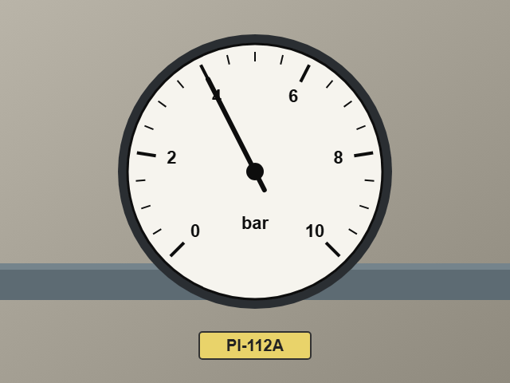
P01 · مقياس بمؤشر · ضغط الطرد (bar)
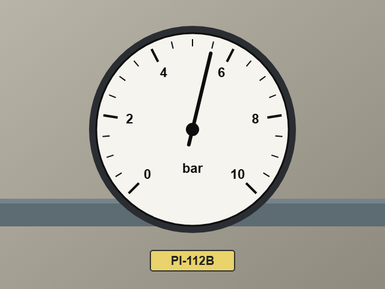
P02 · مقياس بمؤشر · ضغط الطرد (bar)
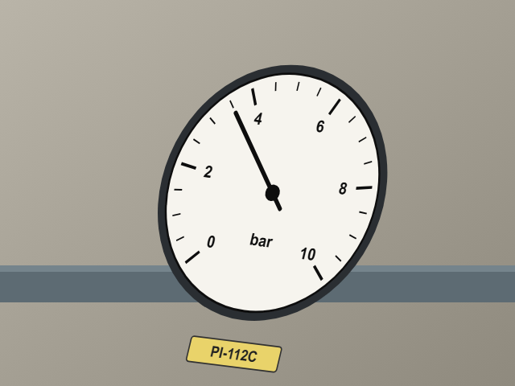
P03 · مقياس بمؤشر · ضغط الطرد (bar)
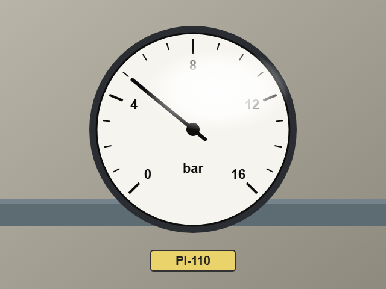
P04 · مقياس بمؤشر · ضغط خط الدفع (bar)
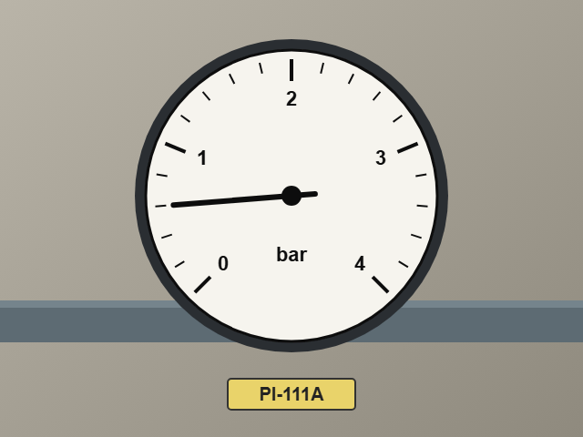
P05 · مقياس بمؤشر · ضغط السحب (bar)
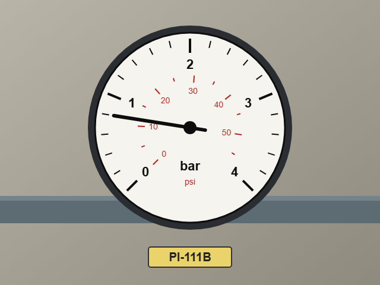
P06 · مقياس بمؤشر · ضغط السحب (bar)
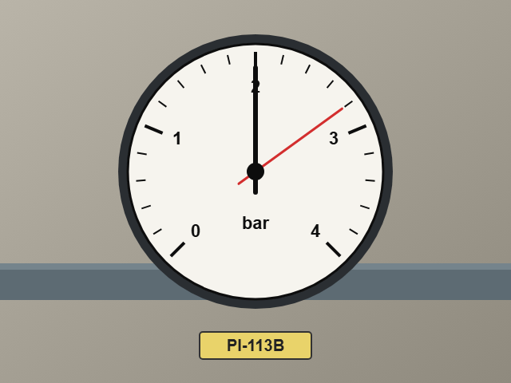
P07 · مقياس بمؤشر · ضغط سائل الحاجز (bar)
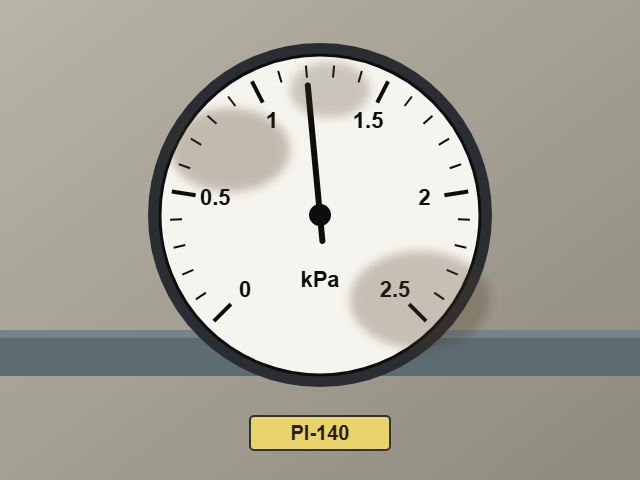
P08 · مقياس بمؤشر · ضغط هواء التهوية (kPa)
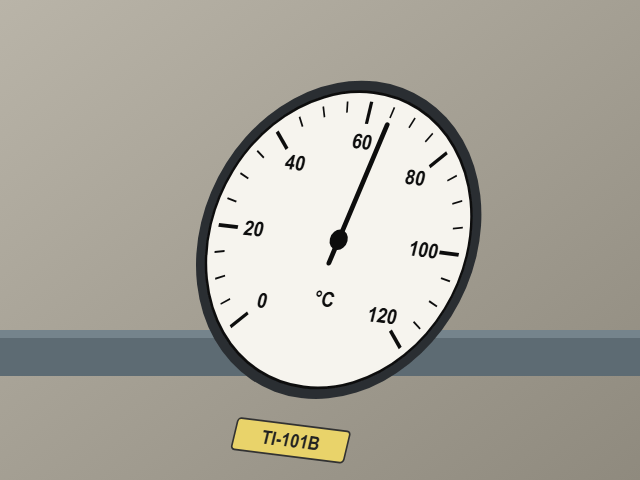
P09 · مقياس بمؤشر · حرارة محمل المضخة (°C)
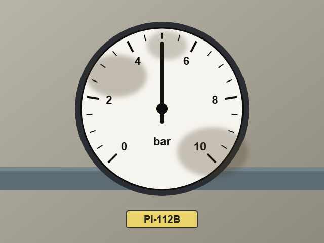
P10 · مقياس بمؤشر · ضغط الطرد (bar)
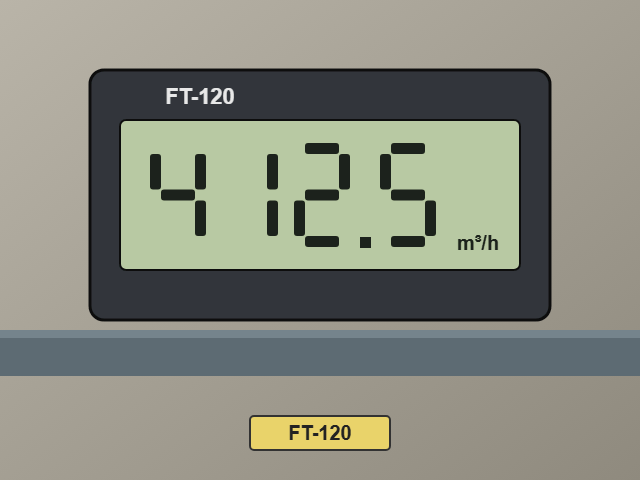
P11 · شاشة رقمية · التدفق (m³/h)
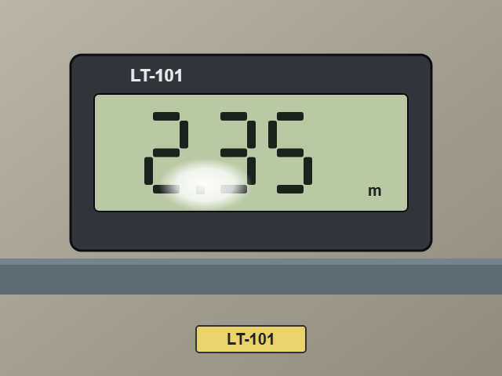
P12 · شاشة رقمية · مستوى بئر التجميع (m)
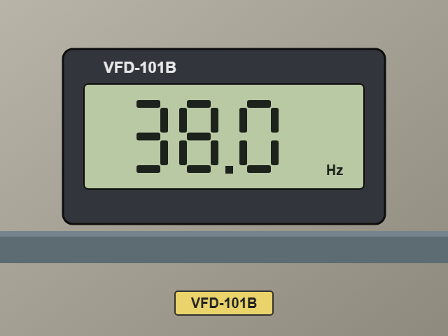
P13 · شاشة رقمية · تردد مغيّر السرعة (Hz)
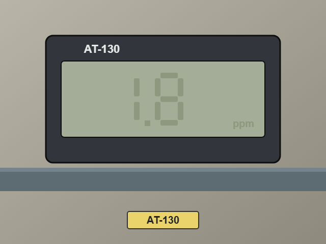
P14 · شاشة رقمية · قراءة كاشف كبريتيد الهيدروجين (ppm)
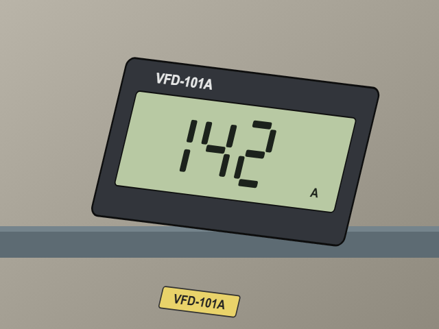
P15 · شاشة رقمية · تيار المحرك (A)
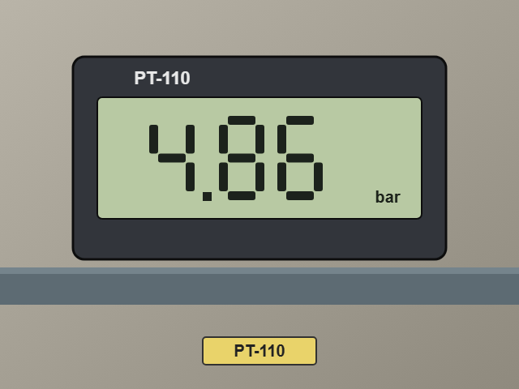
P16 · شاشة رقمية · ضغط خط الدفع (bar)P17 · لوحة بيانات ونص صغير · قدرة المحرك من لوحة البيانات (kW)P18 · لوحة بيانات ونص صغير · الرقم التسلسلي من لوحة البيانات
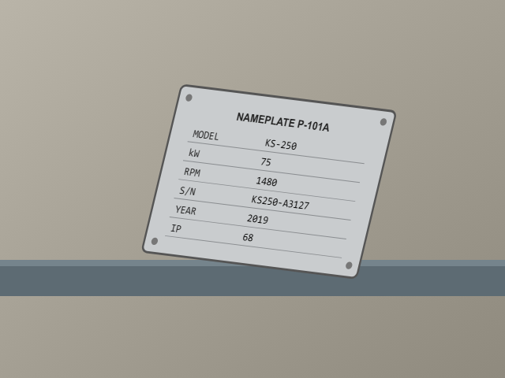
P19 · لوحة بيانات ونص صغير · سرعة الدوران من لوحة البيانات (rpm)
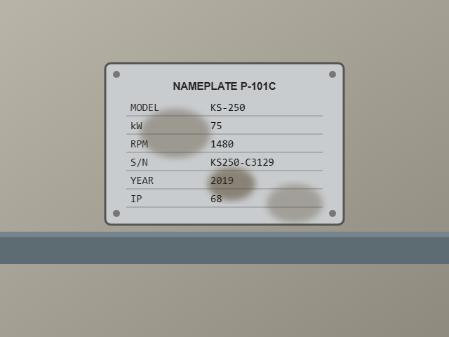
P20 · لوحة بيانات ونص صغير · سرعة الدوران من لوحة البيانات (rpm)
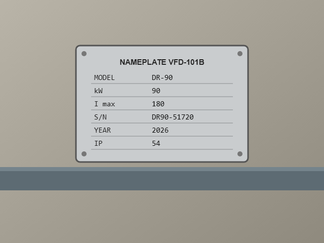
P21 · لوحة بيانات ونص صغير · أقصى تيار خرج من لوحة البيانات (A)
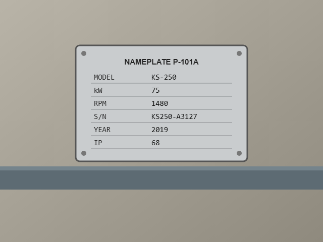
P22 · لوحة بيانات ونص صغير · سنة الصنع من لوحة البيانات
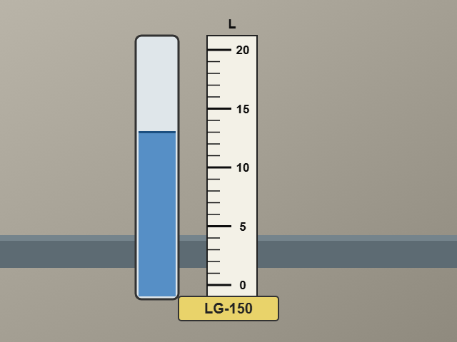
P23 · مستوى · مستوى خزان سائل الحاجز (L)
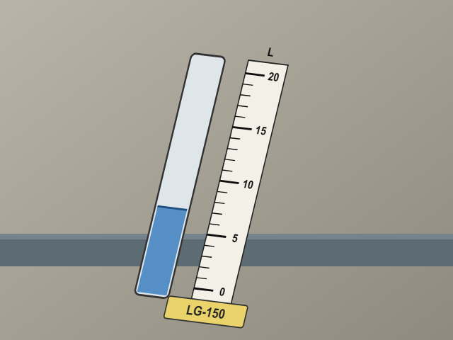
P24 · مستوى · مستوى خزان سائل الحاجز (L)
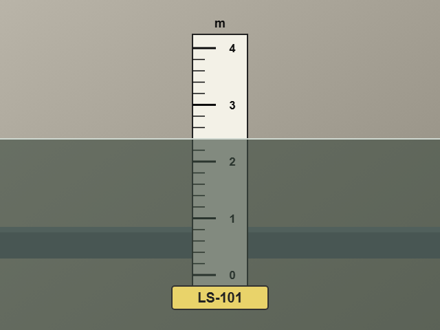
P25 · مستوى · مستوى بئر التجميع على المسطرة (m)
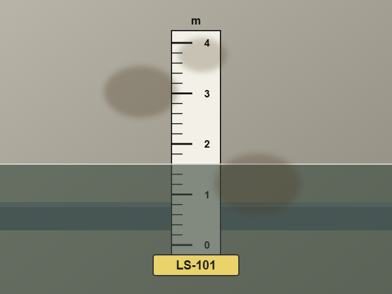
P26 · مستوى · مستوى بئر التجميع على المسطرة (m)
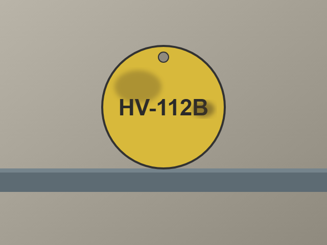
P27 · بطاقة أو ملصق · رمز الصمام على البطاقة
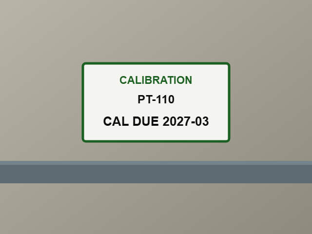
P28 · بطاقة أو ملصق · تاريخ المعايرة القادمة على الملصق
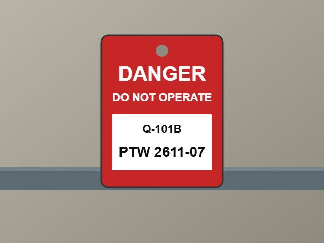
P29 · بطاقة أو ملصق · رقم تصريح العمل على بطاقة القفلP30 · بطاقة أو ملصق · رمز المصهر على الملصق